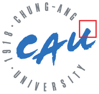
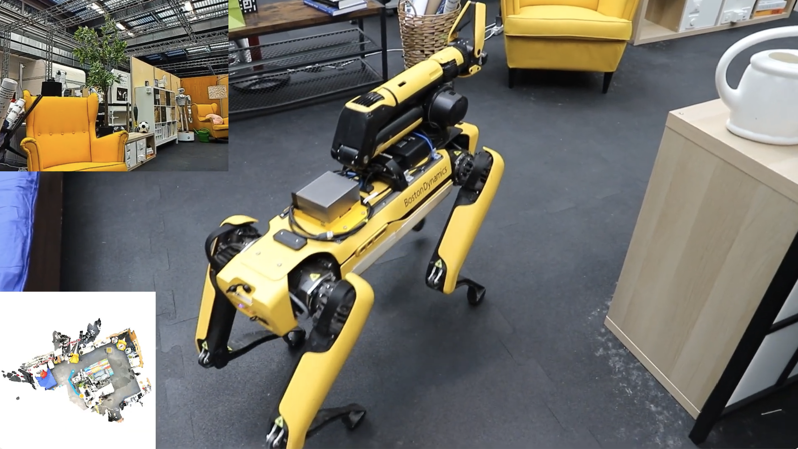
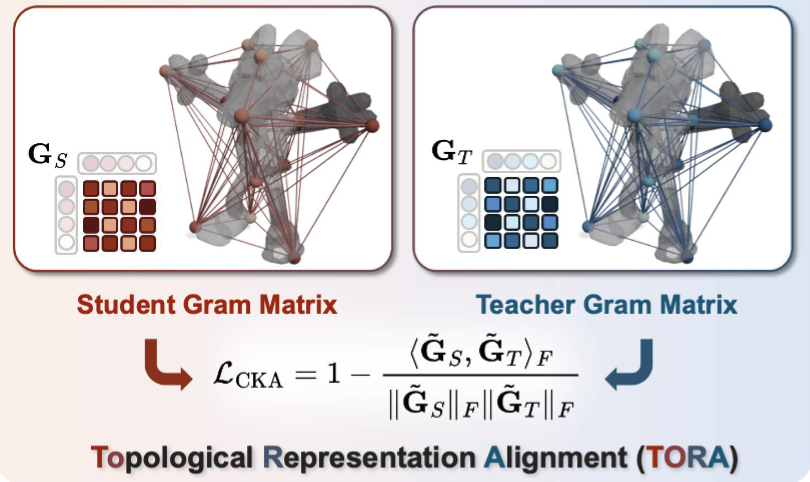
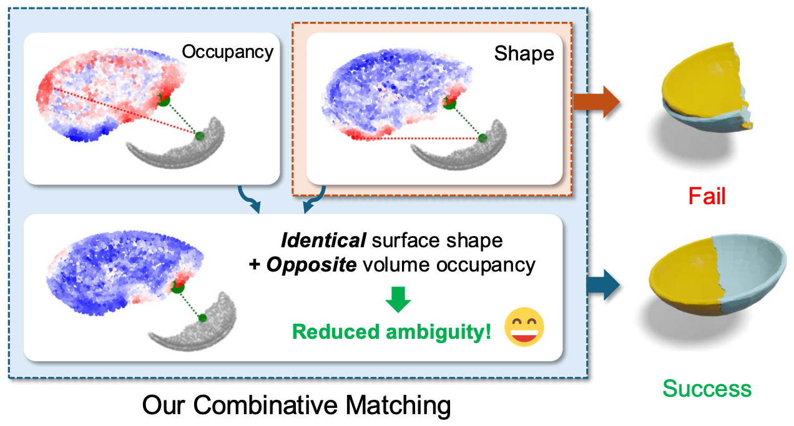
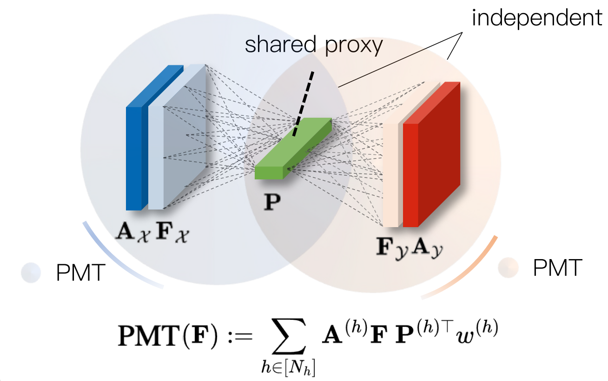
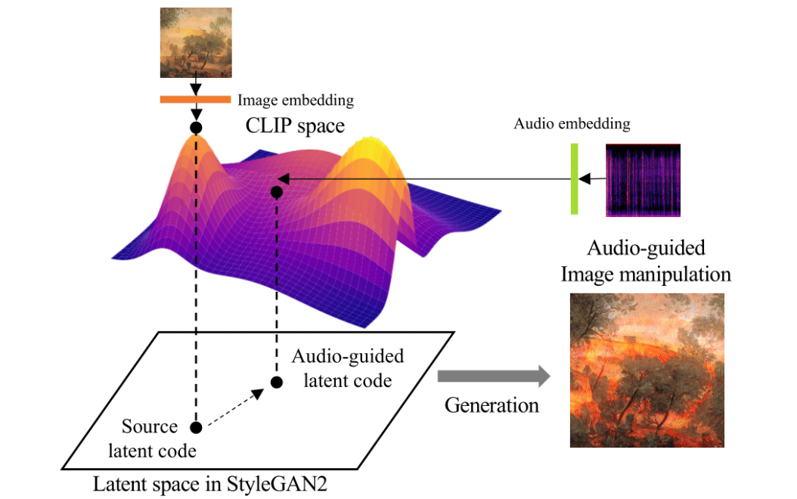

I am a Research Scientist at VUNO Inc., focusing on 3D computer vision. I am also in research collaboration with the Computer Vision and Geometry Group, ETH Zurich, working with Dr. Sunghwan Hong and Prof. Dr. Marc Pollefeys. I received my M.Sc. in Computer Science and Engineering from POSTECH, advised by Prof. Dr. Minsu Cho. My research interests span computer vision and deep learning, with a focus on 3D vision, visual correspondence, and geometric understanding. Feel free to reach out via email, GitHub, or LinkedIn.
News
🗣️ I serve as a Graduate Student President for Dept. of CSE, POSTECH. (Feb 29, 2024)
🏆 I won the 18th Kwanjeong Educational Foundation Fellowship. (Apr 27, 2023)
Experience
Research Collaboration, Computer Vision and Geometry Group, ETH Zurich
Nov 2025 – Present
Topic: Representation Alignment for 3D Geometry
Supervised by Dr. Sunghwan Hong and Prof. Dr. Marc Pollefeys
Supervised by Dr. Sunghwan Hong and Prof. Dr. Marc Pollefeys
Research Scientist (Military Obligation), VUNO Inc.
Jan 2025 – Present
Topic: Computer Vision for Medical Image Analysis
Supervised by Dr. Sunghoon Joo
Supervised by Dr. Sunghoon Joo
Research Assistant, Computer Vision Lab, POSTECH
Jul 2022 – Feb 2025
Topic: 3D Vision, Visual correspondence and its applications
Supervised by Prof. Dr. Minsu Cho
Supervised by Prof. Dr. Minsu Cho
Education
Feb 2023 – Feb 2025
M.Sc. in Computer Science and Engineering
Advised by Prof. Dr. Minsu Cho
Advised by Prof. Dr. Minsu Cho

Chung-Ang University
B.Sc. in Computer Science and Engineering
GPA: 4.31/4.5 | Summa Cum Laude, 1st in Class of 2023
Advised by Prof. Dr. Junseok Kwon
GPA: 4.31/4.5 | Summa Cum Laude, 1st in Class of 2023
Advised by Prof. Dr. Junseok Kwon
Selected Publications


European Conference on Computer Vision (ECCV) 2026

IEEE/CVF International Conference on Computer Vision (ICCV) 2025
Highlight presentation (263/11,152 = 2.35%)

International Conference on Machine Learning (ICML) 2024

Neural Information Processing Systems (NeurIPS) 2021 Workshop on ML4CD
Professional Services
- Journal Reviewer: TPAMI (2024–2025)
- Conference Reviewer: ECCV (2026), NeurIPS (2026), 3DV (2026), ICLR (2025), CoRLW (2025), ACCVW (2024)
Honors & Awards
- Travel Grant — IEEE/CVF International Conference on Computer Vision (ICCV) (2025)
- Best Paper Award at IPIU (2024) — Grand Prize, awarded to 1st of 311 papers (= 0.3%)
- 18th Kwanjeong Educational Foundation Fellowship (2023) — Winner - $17,000
- Bang Sung-Yang Graduate Fellowship (2023) — Winner - $1,200
- Summa Cum Laude at Chung-Ang Univ. (2023)
- 16th Kwanjeong Educational Foundation Fellowship (2021) — Winner - $16,500
- Dean's List at Chung-Ang Univ. (2019 Fall, 2020 Spring, 2020 Fall, 2021 Fall)